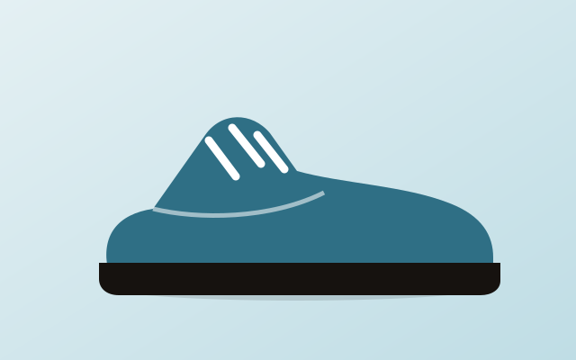
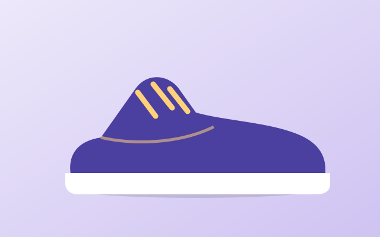
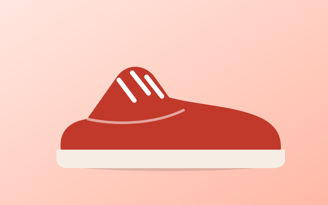

Featured guide
The 30-day sneaker care plan
A simple weekly routine that keeps your pairs looking new for years.
Start the care planLatest articles
Showing 6 of 6 articles
No articles match your search. Try a different word or choose All.

Care
How to clean white leather sneakers safely
Soft brush, mild soap and the one thing you should never put in the dryer.

Sizing
Finding your fit in UK sizes 6 to 11
Measure at the end of the day and leave a thumb of space at the toe.

Guides
Running vs lifestyle sneakers: what differs
Cushioning, weight and outsole grip explained in plain words.

Sizing
Five lacing patterns that fix fit problems
Heel slip, narrow toe box or high arch: there is a lacing fix for each.

Care
How to store sneakers so they last longer
Shape, airflow and light: three simple rules for your shoe shelf.

Guides
Break in new sneakers in one week
A short plan that avoids blisters and sore heels.
Cleaning methods compared
| Method | Best for | Time | Risk of damage |
|---|---|---|---|
| Soft brush and soap | Leather, canvas | 10 min | ✓ Low |
| Magic eraser | Rubber soles | 5 min | △ Medium |
| Washing machine | Mesh running shoes | 40 min | ✕ High |
Questions readers ask
A light brush after every few wears and a proper clean once a month is enough for most pairs.
Dry them in shade with newspaper inside. Direct sun can yellow white soles and crack leather.
Thick insoles can take half a size of room, so try them with the insole you plan to wear.